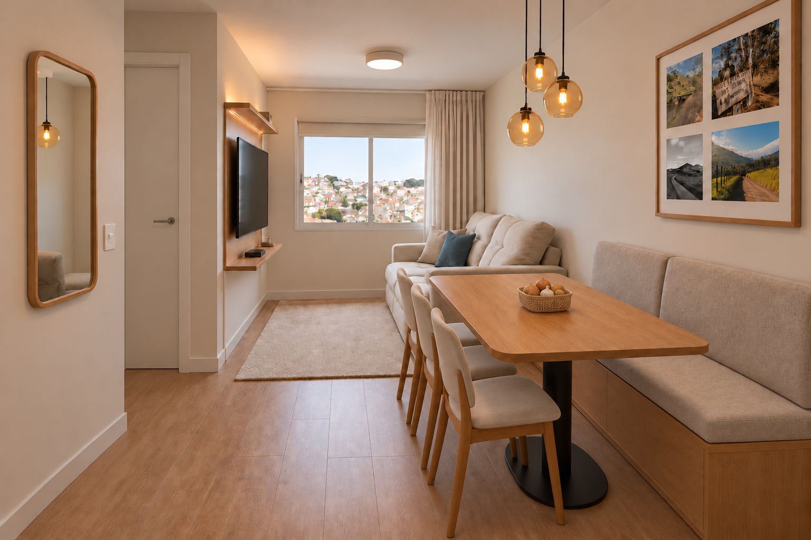
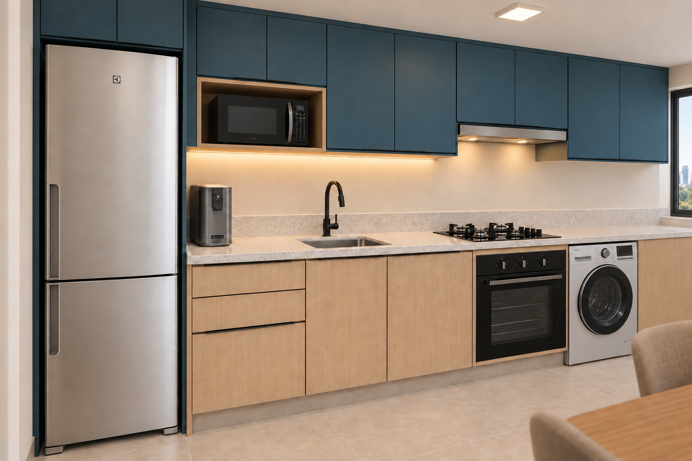
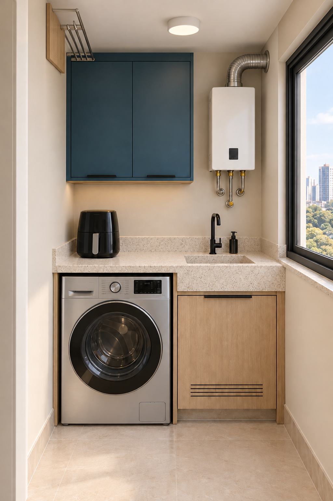
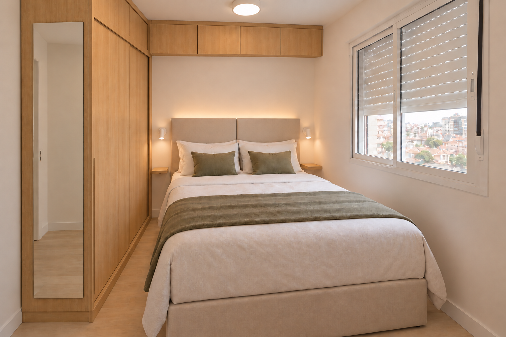
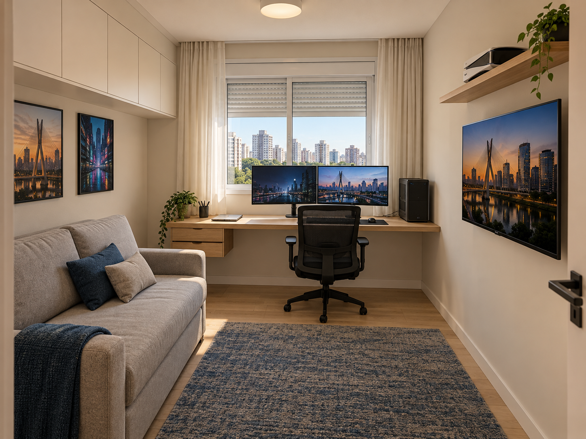
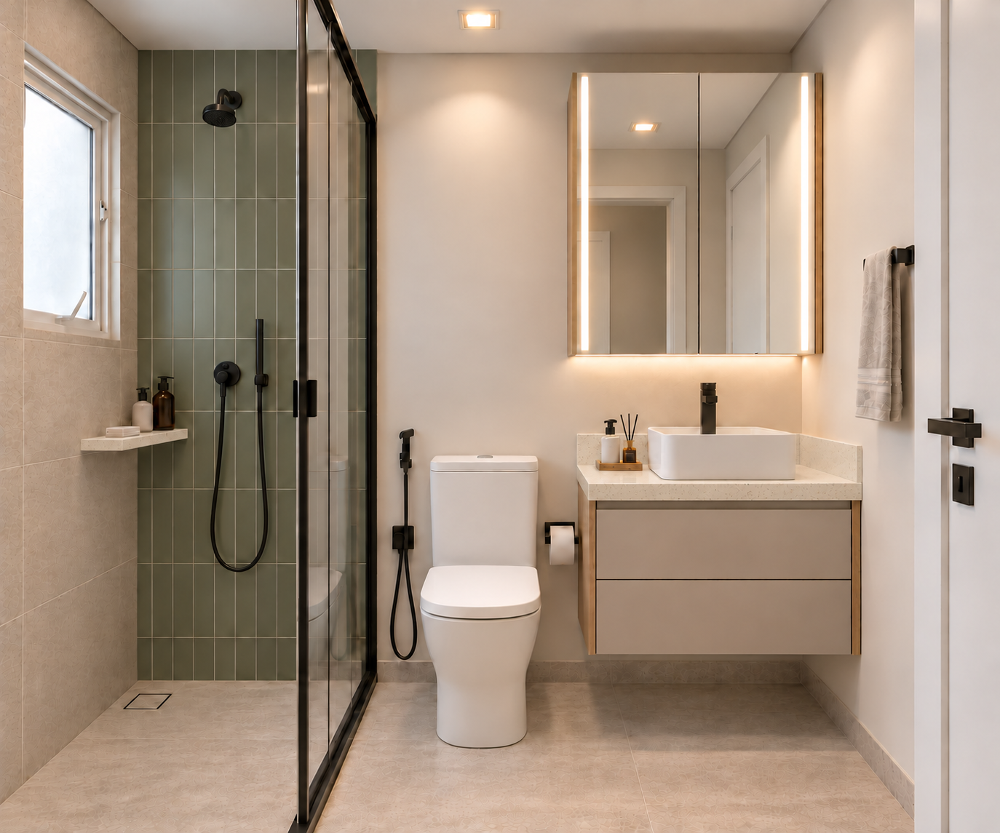

O apartamento, em seis imagens
12/10/2026 · Primeira rodada de renders de estudo. Guarda-roupa de 65 cm adotado; corrediças de 40 cm no escritório.
Imagens geradas por IA a partir das referências e decisões. As cotas documentadas prevalecem; detalhes incidentais não representam novas escolhas. As pendências técnicas continuam registradas.
Sala e jantar

Mesa 150/180 × 75; três cadeiras na lateral; banco 180 × 55; sofá Bonnie; painel liso e prateleiras Arenza; fotos preservadas.
Nova vista com a fruteira ventilada e as três cadeiras na lateral. Cortina, luminárias e móveis seguem a direção visual aprovada. O tecido, os perfis e as proporções são aproximações; base da mesa, apoios do banco e iluminação ainda dependem de detalhamento.
Cozinha

Azul Petróleo nos superiores, Arenza nos inferiores, Branco Itaúnas; IB6S, PE12G junto à geladeira, três gavetas, pia e cocção.
Cozinha e lavanderia contínuas, sem a divisória criada na primeira tentativa. Marcenaria e produtos têm representação aproximada; a perspectiva não comprova folgas. Os 10 cm acima do micro foram preservados como intenção de projeto, com a divergência do manual ainda pendente. Corte forno/cooktop e transição dos aéreos seguem técnicos.
Lavanderia

LG Inox Look, tanque esculpido, cesto sob o tanque, air fryer na bancada, superiores azuis e chapa lisa para o varal.
Tanque, varal elevado e área do aquecedor são estudos de aparência. A chapa lisa substitui o ripado gerado inicialmente. Posição exata, tamanho e mecanismo do varal, ligações, duto, afastamentos do E21 e guarda do banquinho ainda não estão resolvidos por esta imagem. Não usar o render para instalar.
Quarto principal / L alinhado

Guarda-roupa com 65 cm totais; conjunto em L com bases alinhadas a 213,2 cm e topo contínuo no teto; espelho lateral e cama clara/oliva.
Nova decisão: subir o fundo do aéreo da cabeceira em 8,2 cm, até a cota inferior do maleiro. No cenário com teto 247, arremate 3 e chapas 1,8, ambos ficam com 30,8 cm de corpo e 27,2 cm de altura interna geométrica. Profundidades 65/25 e junta 3 preservadas. Detalhe na página 8; ferragens continuam pendentes.
Escritório / uso diário

Bancada com duas telas e notebook, PC à direita; duas gavetas à esquerda com corrediças nominais de 40 cm; sofá-cama cinza e TV oposta.
Armário alto sobre o sofá, área aberta acima dos consoles e ausência do antigo módulo da caixa do PC. Cadeira, artes finais, plantas e tapete são elementos ilustrativos da cena, não novas escolhas ou compras. O sofá e os aparelhos aproximam o programa; a imagem não comprova modelo comercial exato nem o modo hóspedes.
Banheiro

Uma parede verde no box; cuba branca, torneira preta atrás dela, gabinete fechado bege, armário espelhado iluminado e chuveiro redondo.
A referência foi corrigida para chuveiro redondo com duchinha e pedra clara de granulação fina. Louças e metais aproximam os modelos escolhidos, sem reprodução técnica exata. Duas frentes do gabinete, detalhes do box e parede clara do banho permanecem hipóteses. A imagem não fecha o percurso hidráulico nem a ocultação de sua descida.